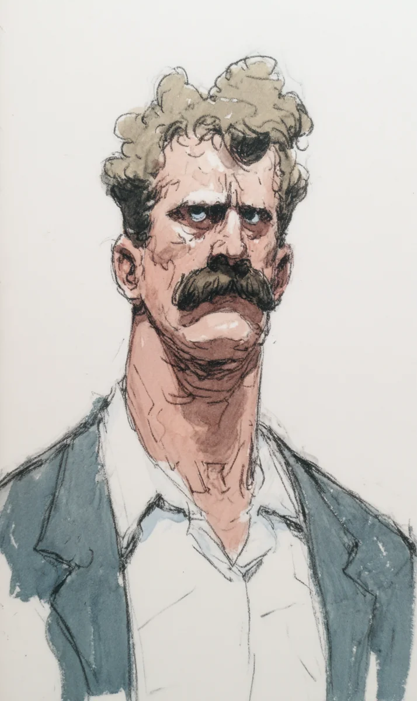

김만덕 씨는 오늘 밤도 잠을 못 잡니다.
[Mr. Kim Man-deok can’t sleep tonight either.]
새벽 두 시인데, 그의 콧수염 속에서 자동차 경적이 빵빵 울립니다.
[It’s two in the morning, but car horns are honking inside his mustache.]
누가 누구한테 화를 내는지 만덕 씨는 도저히 알 수 없습니다.
[Mr. Man-deok cannot possibly tell who is angry at whom.]
만덕 씨의 콧수염 안에는 도시가 하나 있습니다.
[Inside Mr. Man-deok’s mustache, there is a city.]
그 도시 안에도 도시가 또 있습니다.
[Inside that city, there is another city.]
그리고 그 도시 안에도 도시가 또 하나 있습니다.
[And inside that city, there is yet another city.]
도시 안의 도시, 그 안의 도시, 너무 많아서 만덕 씨는 머리가 아픕니다.
[A city inside a city inside a city, so many that Mr. Man-deok gets a headache.]
첫 번째 도시의 이름은 “콧수염시”입니다.
[The first city is called “Mustache City.”]
콧수염시 사람들은 키가 작고, 모자를 좋아하고, 항상 바쁘게 걸어다닙니다.
[The people of Mustache City are short, love hats, and are always walking around busily.]
아침에는 시장에서 빵과 김치를 팔고, 점심에는 국밥을 먹고, 저녁에는 노래방에 갑니다.
[In the morning they sell bread and kimchi at the market, at lunch they eat gukbap, and in the evening they go to noraebang.]
콧수염시의 시장은 매주 화요일에 연설을 합니다.
[The mayor of Mustache City gives a speech every Tuesday.]
“친애하는 시민 여러분, 오늘도 우리는 살았습니다!”
[”Dear citizens, today too, we have survived!”]
시민들은 박수를 치고, 만덕 씨는 베개를 귀에 더 세게 누릅니다.
[The citizens applaud, and Mr. Man-deok presses the pillow harder against his ear.]
콧수염시의 날씨는 항상 약간 습합니다.
[The weather in Mustache City is always a little humid.]
왜냐하면 만덕 씨가 가끔 콧물을 흘리기 때문입니다.
[Because Mr. Man-deok sometimes has a runny nose.]
시민들은 그날을 “비 오는 날”이라고 부르고, 우산을 들고 다닙니다.
[The citizens call those days “rainy days” and walk around carrying umbrellas.]
두 번째 도시의 이름은 “더작은시”입니다.
[The second city is called “Smaller City.”]
더작은시 사람들은 콧수염시 사람들보다 두 배 더 작습니다.
[The people of Smaller City are twice as small as the people of Mustache City.]
이 사람들은 자전거 대신 개미를 타고 다닙니다.
[These people ride ants instead of bicycles.]
개미들이 행복해 보이지는 않지만, 아무도 묻지 않습니다.
[The ants don’t look happy, but no one asks.]
더작은시의 가장 유명한 음식은 “참깨 한 개 구이”입니다.
[Smaller City’s most famous food is “grilled single sesame seed.”]
한 가족이 참깨 하나로 일주일을 먹습니다.
[One family eats one sesame seed for a whole week.]
더작은시에는 야구팀이 두 개 있고, 매주 토요일에 시합을 합니다.
[Smaller City has two baseball teams, and they play every Saturday.]
응원하는 소리, 호루라기 소리, 그리고 누군가 우는 소리가 만덕 씨의 콧구멍까지 올라옵니다.
[Cheering, whistles, and the sound of someone crying rise all the way up to Mr. Man-deok’s nostrils.]
세 번째 도시의 이름은 아무도 모릅니다.
[Nobody knows the name of the third city.]
너무 작아서, 만덕 씨도 그 사람들이 무엇을 하는지 볼 수가 없습니다.
[It’s so small that even Mr. Man-deok can’t see what those people are doing.]
하지만 밤마다 작은 록 콘서트 소리가 들립니다.
[But every night, the sound of a small rock concert can be heard.]
기타, 드럼, 그리고 누군가 노래를 정말, 정말 못 부릅니다.
[Guitar, drums, and someone is singing really, really badly.]
만덕 씨는 가끔 생각합니다.
[Mr. Man-deok sometimes thinks.]
“저 사람은 왜 무대에 올라갈까? 친구가 없나?”
[”Why does that person get on stage? Doesn’t he have any friends?”]
회사에서도 만덕 씨의 인생은 쉽지 않습니다.
[At work too, Mr. Man-deok’s life is not easy.]
부장님이 “만덕 씨, 이 서류 좀 봐 주세요”라고 말합니다.
[The manager says, “Mr. Man-deok, please look at this document.”]
하지만 만덕 씨의 귀에는 콧수염시 택시 기사의 욕만 들립니다.
[But all Mr. Man-deok can hear is the cursing of a Mustache City taxi driver.]
“네? 죄송합니다, 뭐라고 하셨어요?”
[”What? I’m sorry, what did you say?”]
부장님은 한숨을 쉬고, 만덕 씨도 한숨을 쉽니다.
[The manager sighs, and Mr. Man-deok sighs too.]
친구들과 식당에 가도 마찬가지입니다.
[It’s the same when he goes to restaurants with friends.]
친구가 농담을 하면, 만덕 씨는 한 박자 늦게 웃습니다.
[When a friend tells a joke, Mr. Man-deok laughs one beat late.]
콧수염 속 더작은시에서 누군가 또 야구공을 머리에 맞았기 때문입니다.
[Because in Smaller City inside his mustache, someone got hit in the head with a baseball again.]
데이트도 어렵습니다.
[Dating is also difficult.]
여자친구가 “사랑해”라고 속삭이면, 만덕 씨는 “뭐라고? 더 크게 말해 줘”라고 합니다.
[When his girlfriend whispers “I love you,” Mr. Man-deok says, “What? Please say it louder.”]
여자친구들은 보통 일주일 안에 떠납니다.
[Girlfriends usually leave within a week.]
어느 날 만덕 씨는 욕실에 가서 가위를 손에 들었습니다.
[One day Mr. Man-deok went to the bathroom and took scissors in his hand.]
“오늘은 정말로 잘라야겠다.”
[”Today I really have to cut it.”]
그런데 가위 끝이 콧수염에 닿는 순간, 작은 비명 소리가 터졌습니다.
[But the moment the scissor tips touched the mustache, tiny screams burst out.]
콧수염시 시민들이 가방을 들고 도망갑니다.
[The citizens of Mustache City run with bags in their hands.]
더작은시 야구 선수들이 방망이를 버리고 개미를 타고 도망갑니다.
[The baseball players of Smaller City drop their bats and flee on their ants.]
세 번째 도시의 록 밴드도 기타를 안고 도망갑니다.
[The rock band of the third city also runs away, holding their guitars.]
만덕 씨는 가위를 천천히 내려놓았습니다.
[Mr. Man-deok slowly put down the scissors.]
그는 살인자가 되고 싶지 않았습니다.
[He didn’t want to become a murderer.]
살인자보다 더 나쁜 것, 괴물이 되고 싶지도 않았습니다.
[Something worse than a murderer, a monster, he didn’t want to become either.]
도시 세 개를 한 번에 없애는 사람은 살인자가 아니라 괴물입니다.
[A person who wipes out three cities at once is not a murderer but a monster.]
만덕 씨는 다시 침대에 누웠습니다.
[Mr. Man-deok lay back down in bed.]
콧수염시에서 또 시장의 연설이 시작됐습니다.
[In Mustache City, the mayor’s speech began again.]
“친애하는 시민 여러분, 우리의 영웅 김만덕 씨께 감사드립니다!”
[”Dear citizens, let us thank our hero, Mr. Kim Man-deok!”]
더작은시에서는 작은 박수 소리가 들렸습니다.
[From Smaller City, small applause was heard.]
세 번째 도시에서는 또 누군가 노래를 못 부르고 있었습니다.
[In the third city, someone was once again singing badly.]
만덕 씨는 베개를 꽉 안고, 천장을 보며, 조용히 웃었습니다.
[Mr. Man-deok hugged his pillow tightly, looked at the ceiling, and quietly smiled.]
영웅의 인생은 시끄럽고, 외롭고, 잠이 부족합니다.
[A hero’s life is loud, lonely, and lacking in sleep.]
하지만 누군가는 콧수염을 지켜야 합니다.
[But somebody has to protect the mustache.]